사진 한 장이
20가지 그림체로
바뀝니다
AI 그림 제작자라면 알아 두면 좋은 그림체 40개를 정리했어요. 사진 한 장을 다른 그림으로 바꿀 때 그림체 이름 하나면 충분해요. 그림체마다 뜻과 특징을 함께 담았어요.
쓰는 법
- 사진을 바꿀 때는 사진을 올리고, 이 사진을 다른 그림으로 다시 그려 달라는 말 뒤에 그림체 이름을 영어로 붙여 보세요.
- 새로 그릴 때는 장면(누가, 어디서, 무엇을 하는지)을 먼저 쓰고, 끝에 그림체 이름을 붙이면 돼요.
- 그림체는 한 번에 하나만 넣어 보세요. 이름만 바꿔 넣어도 같은 장면이 전혀 다른 그림이 돼요.
- AI 영상 도구에서도 똑같아요. 장면 설명 끝에 그림체 이름을 붙이면 돼요.
영상에 나온 그림체 20개
번호는 영상에 나온 순서와 같아요. 그림은 토큰전쟁 마스코트 슬라임으로 만든 예시예요.
물에 푼 물감이 번지는 그림입니다.
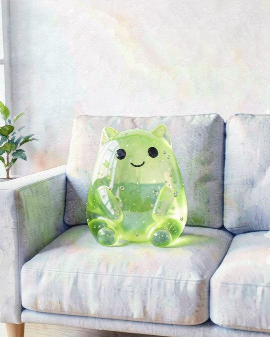
기름 물감의 두꺼운 붓 자국이 남는 그림입니다.
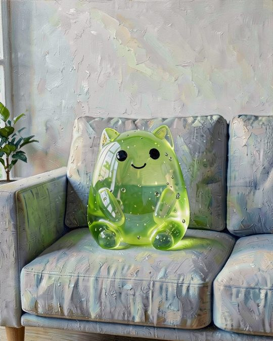
연필 선과 명암으로 그린 그림입니다.
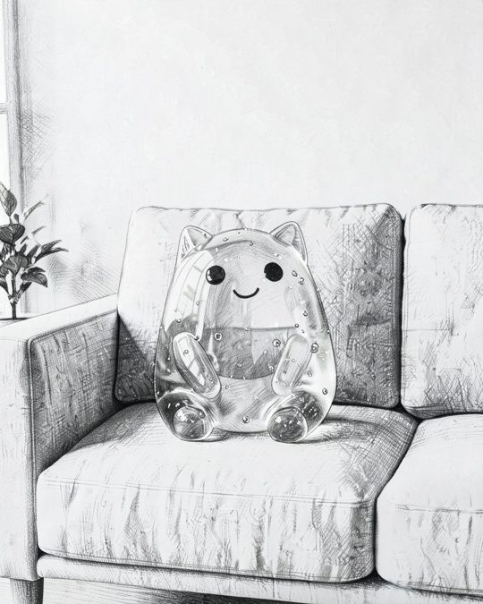
먹의 짙고 옅음으로 그린 동양화입니다.
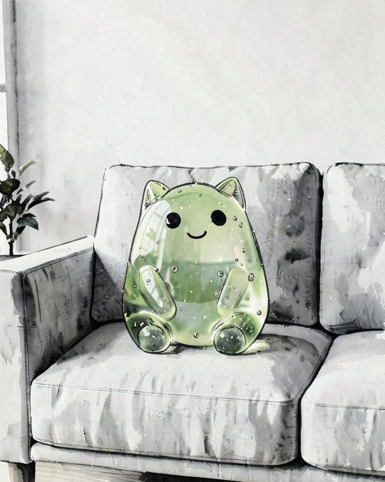
굵은 윤곽선과 강한 원색, 망점을 쓰는 그림입니다.
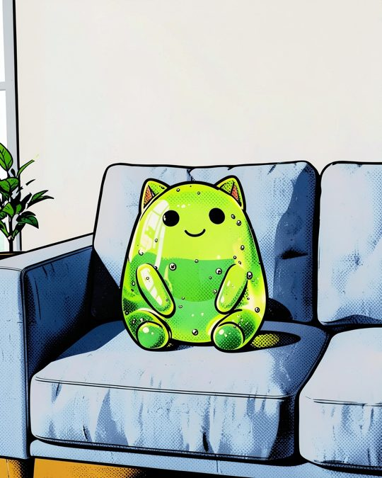
작은 네모 점을 찍어 그린 옛 게임 그림입니다.
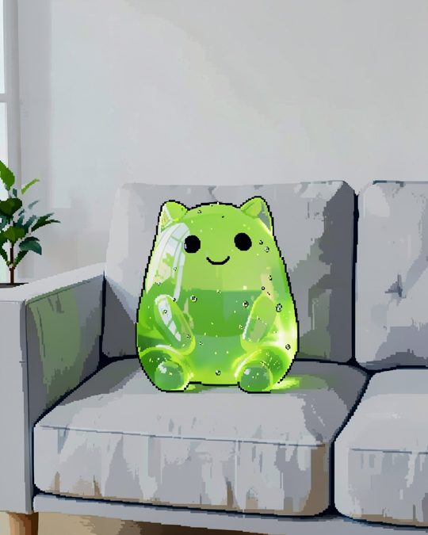
3D 애니메이션 영화 같은 장면입니다.
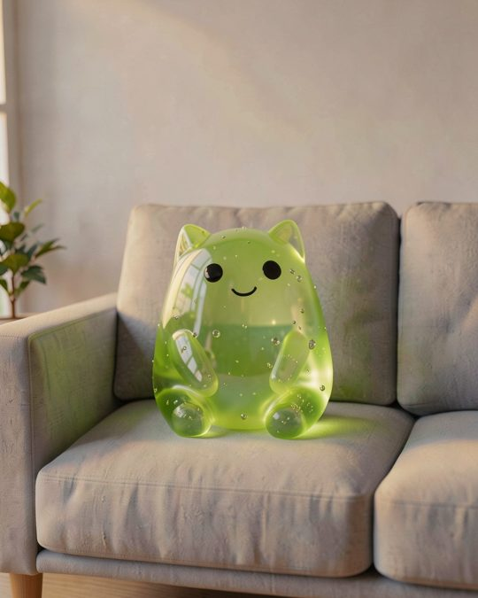
찰흙 인형으로 만든 장면입니다.
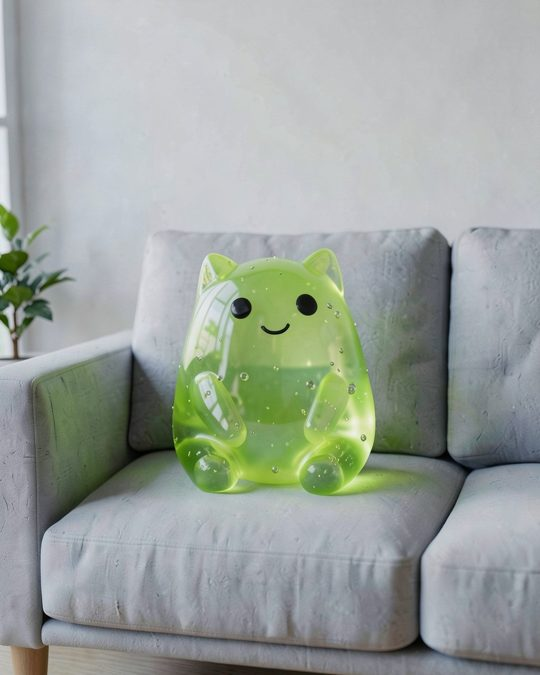
오린 종이를 겹쳐 만든 입체 장면입니다.
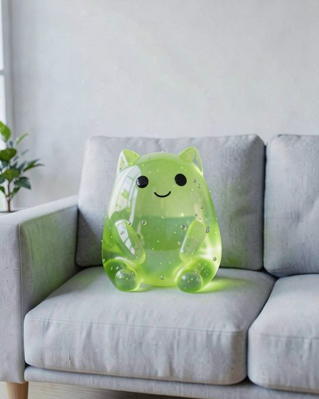
납선으로 이은 색유리 창입니다.
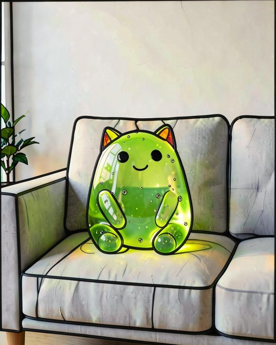
작은 타일 조각을 붙여 만든 그림입니다.
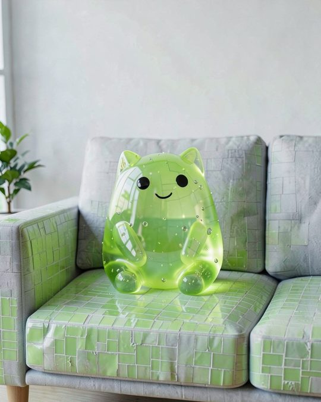
나무판으로 찍은 평평한 색의 판화입니다.
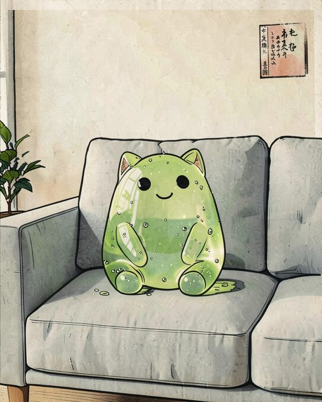
굵은 잉크 선과 망점 음영의 만화입니다.
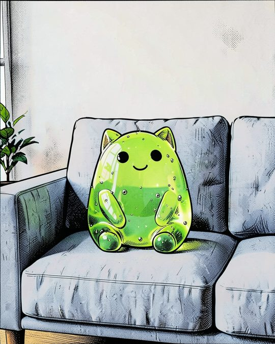
가는 선과 부드러운 채색의 웹툰 그림입니다.
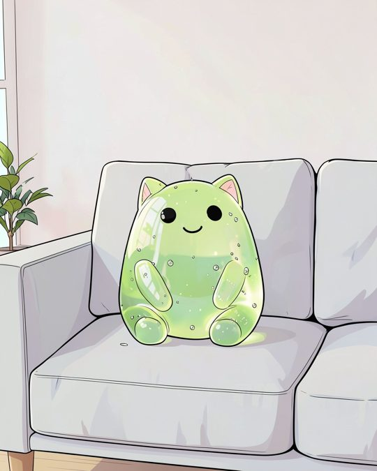
바랜 색과 입자가 있는 옛 필름 사진입니다.
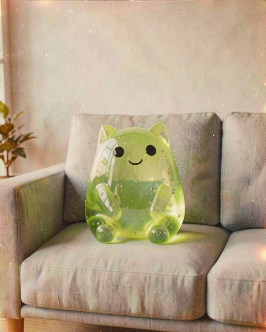
네온 불빛의 미래 도시 분위기입니다.
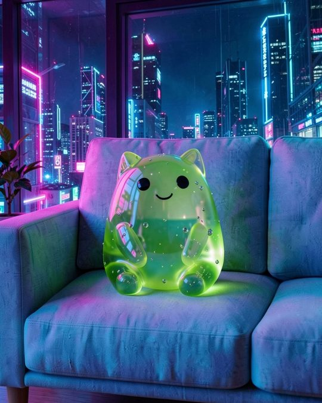
크레파스의 거친 질감이 남는 그림입니다.
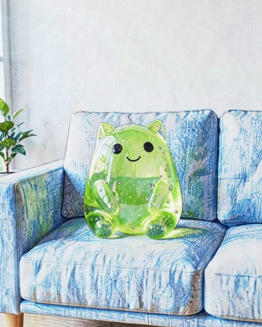
색연필 선이 보이는 그림입니다.
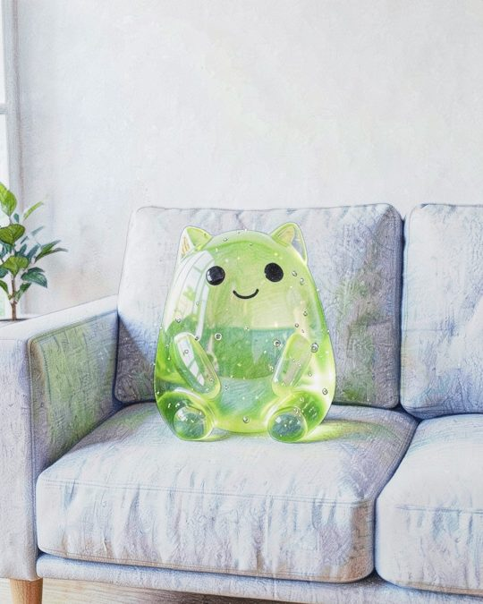
작은 색 점을 찍어 만든 그림입니다.
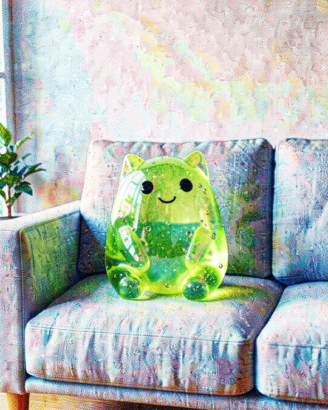
끊기지 않는 한 줄로 그린 그림입니다.
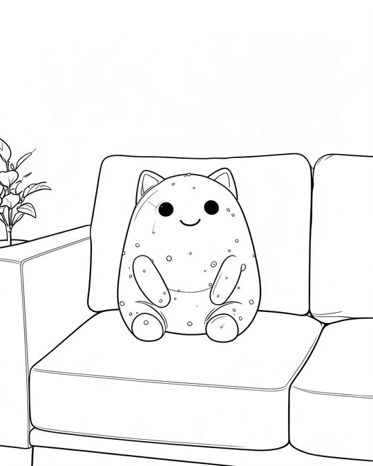
추가 그림체 20개
영상에 나오지 않은 그림체 20개예요. 일부 그림체에는 예시 그림을 붙였어요.
꽃과 덩굴 같은 곡선 장식을 쓰는 19세기 말 양식입니다.
기하학 무늬와 금속 느낌을 쓰는 1920~30년대 양식입니다.
빛과 짧은 붓 터치를 살린 회화 양식입니다.
대상을 여러 각도에서 조각내 겹쳐 그리는 양식입니다.
꿈처럼 현실에 없는 장면을 그리는 양식입니다.
적은 수의 다각형으로 만든 각진 3D입니다.
작은 정육면체를 쌓아 만든 3D입니다.
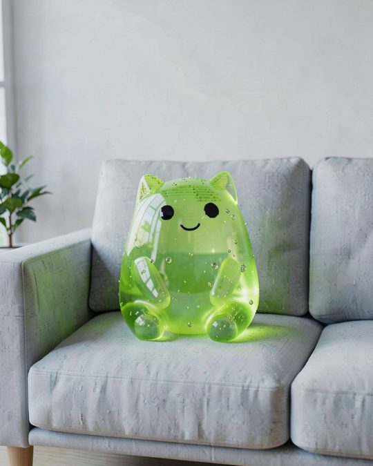
비스듬히 위에서 본 입체를 평행선으로 그린 그림입니다.
그림자 없이 단색 면으로 그린 그림입니다.
깔끔한 선과 면으로 그린 디지털 그림입니다.
색마다 판을 따로 찍어 겹친 판화입니다.
리놀륨 판을 파서 찍은 판화입니다.
목탄으로 그린 거칠고 진한 그림입니다.
부드러운 파스텔 가루 질감의 그림입니다.
마커 펜으로 빠르게 그린 디자인 스케치입니다.
파란 바탕에 흰 선으로 그린 설계도입니다.
천에 실로 수놓은 그림입니다.
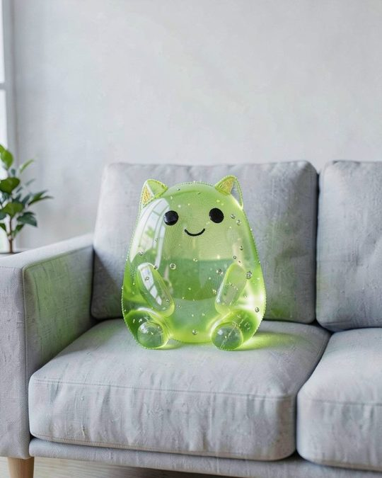
털실로 뜬 것 같은 질감입니다.
장난감 조립 블록으로 쌓은 것 같은 모양입니다.
유리로 빚은 공예품 같은 모양입니다.
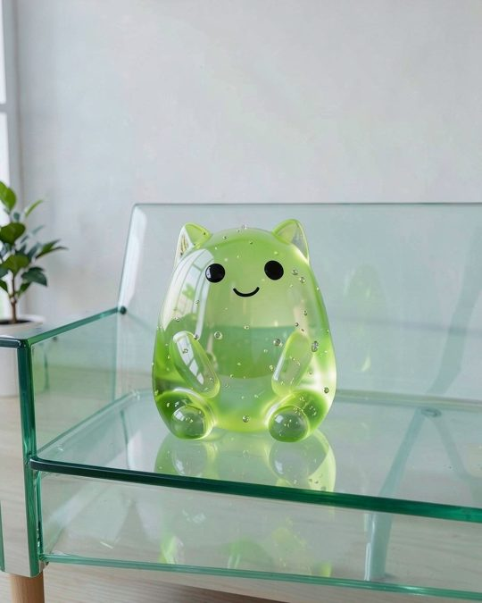
매일 AI 소식은 @tokenwar_ai